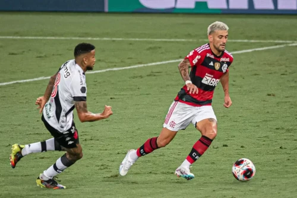
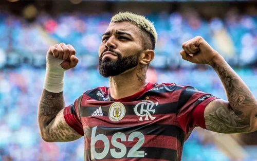

FLA X VAS

Partida aconteceu no maracãna.
0X0
Uma artida cheia de emoçoes
Onde Gabigol perdeu um penalti no ultimo lançe do jogo
E Leo Pereira salvou o flamengo diversas vezes.
Veggeti artilheiro do Vasco, quase não apareceu. E Dimitri Payet foi anulado por Pulgar, volante do Flamengo.
O vasco teve algumas chances, mas nada de se tirar o Chapéu

Gabigol
Nos últimos quatro pênaltis cobrados pelo Gabigol no Flamengo, ele converteu apenas um, que foi contra o Coritiba em agosto do ano passado. Infelizmente, nas outras três cobranças, ele não teve sucesso. Esses pênaltis perdidos foram contra o Grêmio (Copa do Brasil), Cruzeiro (Brasileirão) e Volta Redonda (Cariocão), todos em 2023. Além disso, no último clássico, Gabigol teve um pênalti defendido por Léo Jardim no clássico contra o Vasco pelo Campeonato Carioca, que terminou empatado em 0x0
🖖